Panel de Navegación
Vista de Cliente
- created: 03/10/2011
- latest update: 03/12/2018
- by: Mimasoft
- email: some@example.com
1. Inicio Sesión
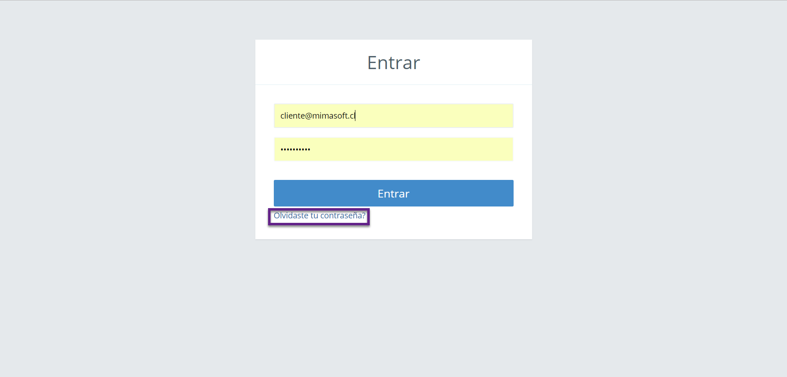
En el caso de haber olvidado la contraseña, la plataforma pedirá su mail de contacto con el fin de entregarle una nueva.
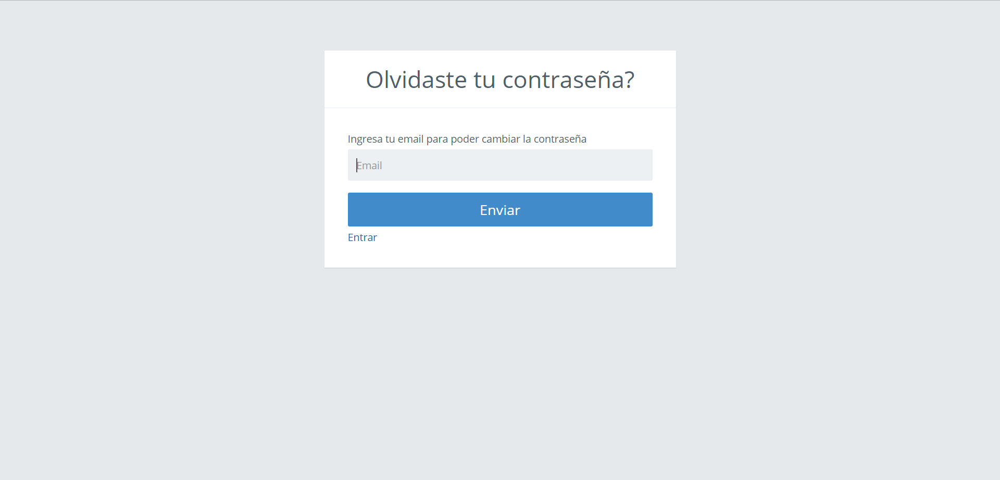
2. Cliente
El Menú de Cliente presenta las opciones de Mi Perfil, Cambio de Contraseña y Salir de la plataforma.
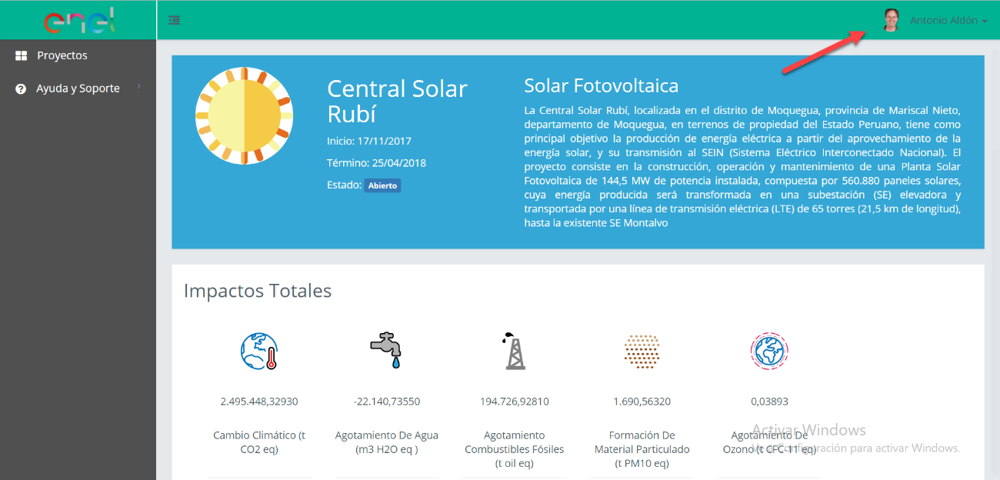
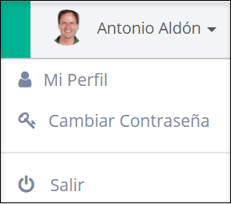
2.1 Mi Perfil
Muestra los datos principales del cliente junto con sus datos de contacto.
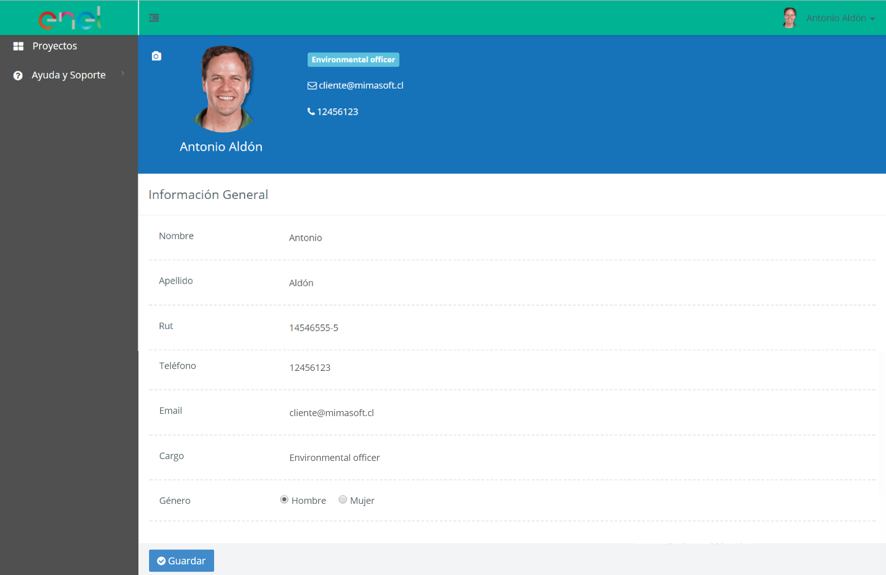
2.2 Cambiar Contraseña
Como su nombre lo dice, permite hacer el cambio de contraseña del usuario.
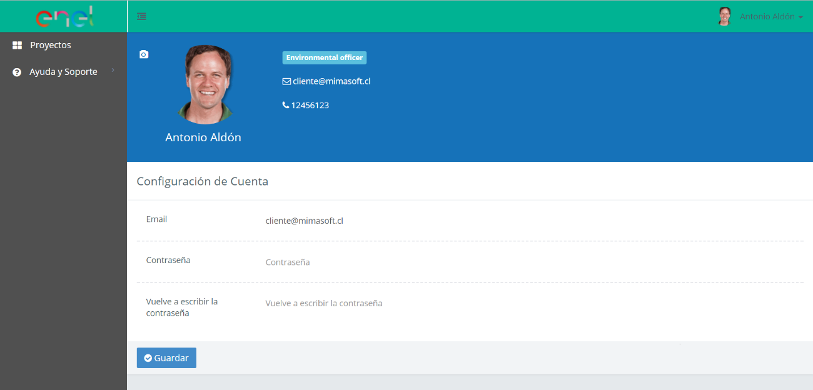
3. Pantalla Principal
3.1 Proyectos
Le permitirá revisar el listado de proyectos en los cuales el usuario está incluido.
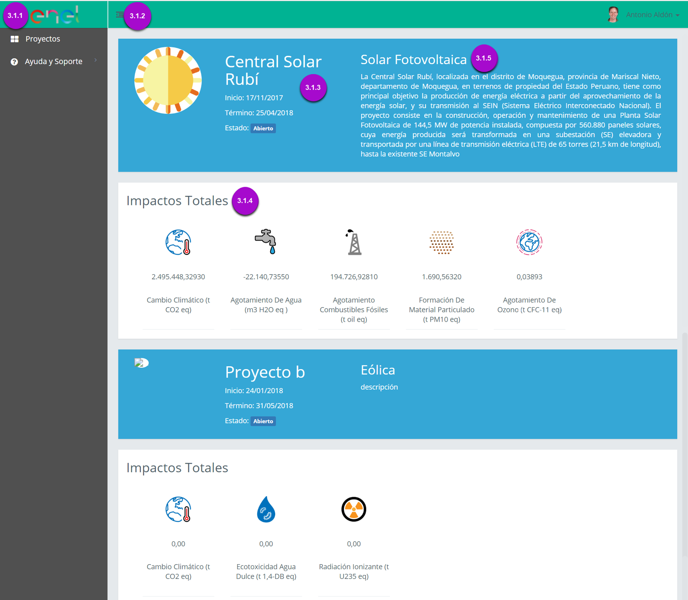
3.1.1 Botón Logo: Regresa al menú principal.
3.1.2 Botón de Expansión: Permite expandir la pantalla principal
3.1.3 Botón Proyecto: Botón que permite el ingreso a un proyecto específico.
3.1.4 Impactos Totales: Presenta el resultado total obtenido para cada categoría de impacto medida en el proyecto.
3.1.5 Descripción del Proyecto: Se describe brevemente la naturaleza del proyecto, su ubicación y sus características generales.
3.2 Ayuda y Soporte
3.2.1 FAQ
Presenta las preguntas más frecuentes acerca de la plataforma, con sus respectivas respuestas.
3.2.2 Glosario
Conjunto de términos necesarios para familiarizarse con la plataforma.
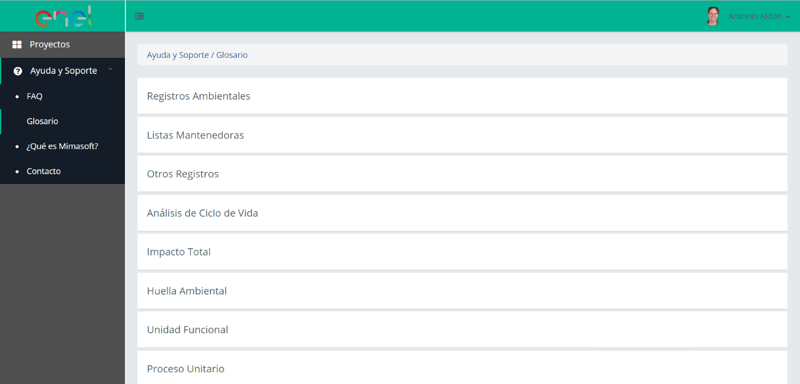
3.2.3 ¿Qué es MIMASOFT?
Presenta las características principales del sistema. Adicionalmente explica los procedimientos básicos para realizar un Análisis de Ciclo de Vida y los beneficios de su implementación.
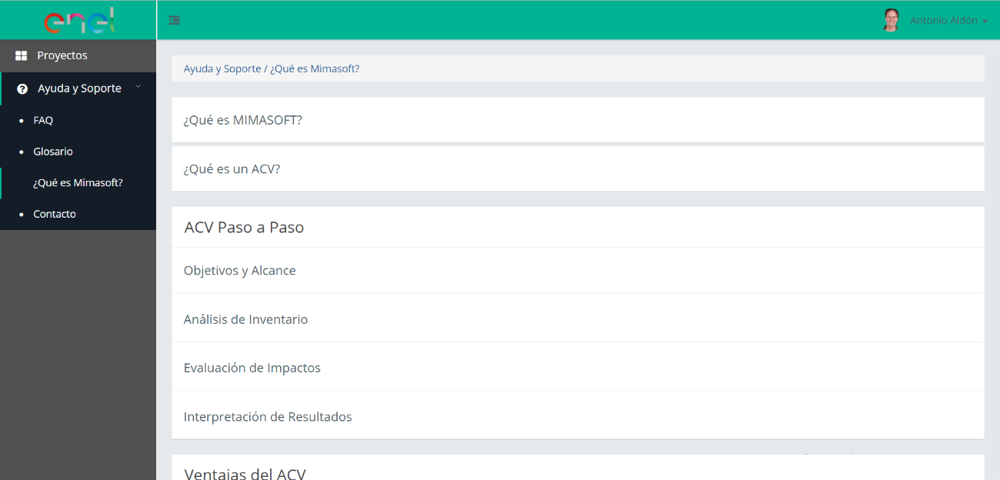
3.2.4 Contacto
Permite enviar sus dudas y consultas al responsable del proyecto.
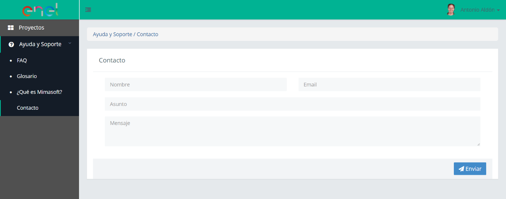
4. Interior de un proyecto
4.1 Proyectos
El panel principal presenta el proyecto elegido por el cliente, donde se muestra un resumen de los impactos ambientales por cada una de sus unidades funcionales y los consolidados de consumos y residuos en tiempo real.
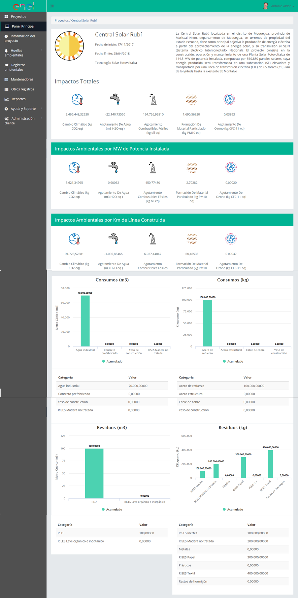
4.2 Información del Proyecto
Muestra las características del proyecto y los miembros designados. Adicionalmente puede incluirse información complementaria considerando, entre otros, características técnicas del proyecto y autorizaciones ambientales.
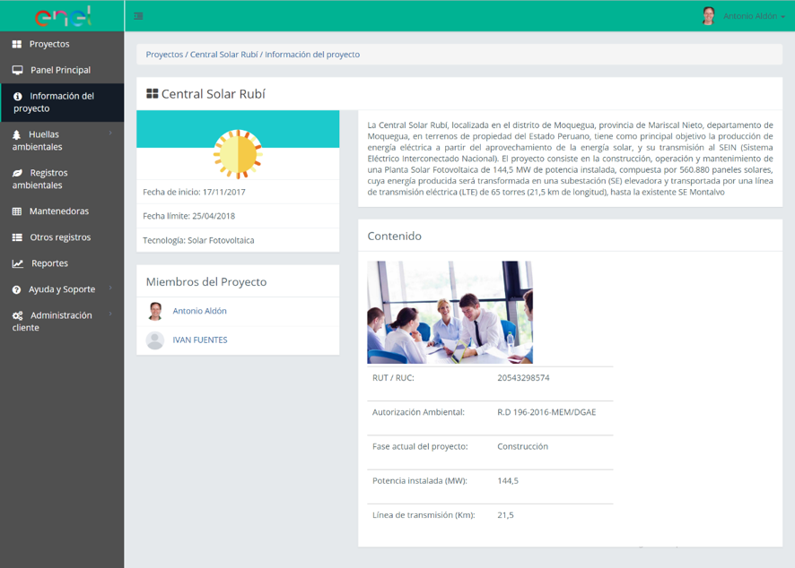
4.3 Huellas Ambientales
Presentan los resultados de los indicadores de los impactos ambientales elegidos para el proyecto.
4.3.1 Unidades Funcionales
Para cada unidad funcional definida en el sistema a analizar se muestran los impactos ambientales correspondientes a cada categoría de impacto elegida al momento de configurar el proyecto y para cada una de las unidades funcionales seleccionadas.
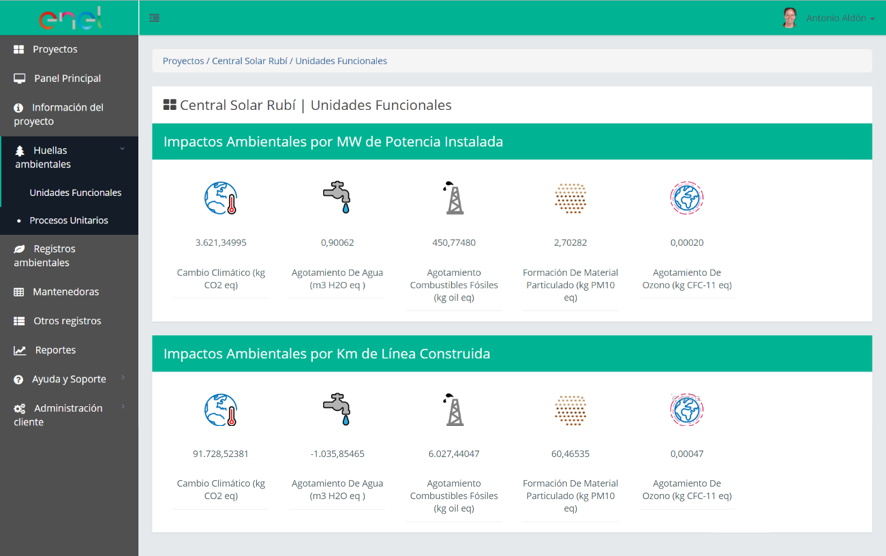
4.3.2 Procesos Unitarios
En este apartado se presentan los procesos unitarios determinados y el impacto generado por éstos para cada categoría de impacto definida para el proyecto.
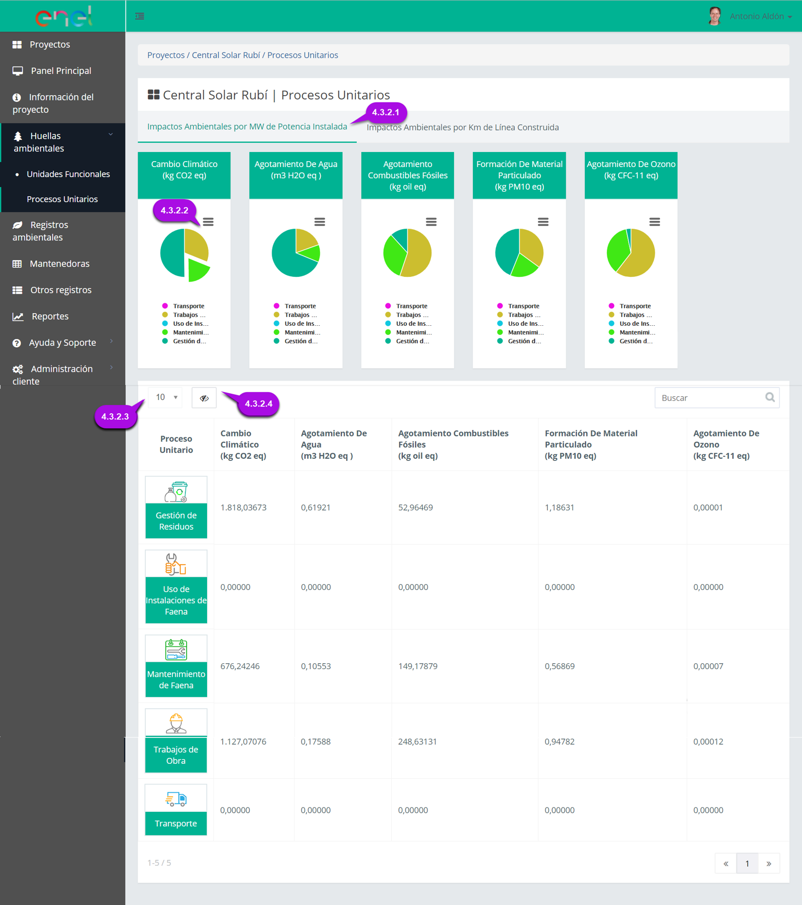
4.3.2.1 Pestaña Unidad Funcional
Permite la elección de la unidad funcional para visualizar sus datos.
4.3.2.2 Descarga de imagen
Permite descargar el gráfico a una imagen formato PNG.
4.3.2.3 Lista de Visualización de Datos
Permite elegir la opción de cuantos datos visualizar en la tabla.
4.3.2.4 Selector de Campos
Permite elegir los campos que se van a mostrar en la tabla.
4.4 Registros Ambientales
Son formularios que se consideran en el cálculo de los impactos ambientales. La información presentada en estos formularios corresponde a registros de emisiones, consumo de insumos, generación de residuos, entre otros.
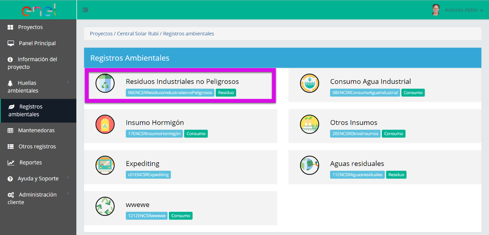

4.4.1 Lista de Visualización de Datos
Permite elegir la opción de cuantos datos visualizar en la tabla.
4.4.2 Selector de Campos
Permite elegir los campos que se van a mostrar en la tabla.
4.4.3 Exportar a Excel
Permite descargar toda la información presente en la tabla en un archivo Excel.
4.4.4 Añadir
Botón con el cual se puede ingresar información a la tabla. La carga de información se aceptará siempre y cuando sean ingresados todos los campos obligatorios.
4.4.5 Botón Ver
Visualiza todos los campos del registro seleccionado.
4.4.6 Botón Editar
Edita el campo seleccionado.
4.4.7 Botón Eliminar
Elimina la información seleccionada.
4.5 Mantenedoras
Formularios que permiten centralizar el manejo de datos en el sistema, permitiendo la modificación de otras listas.
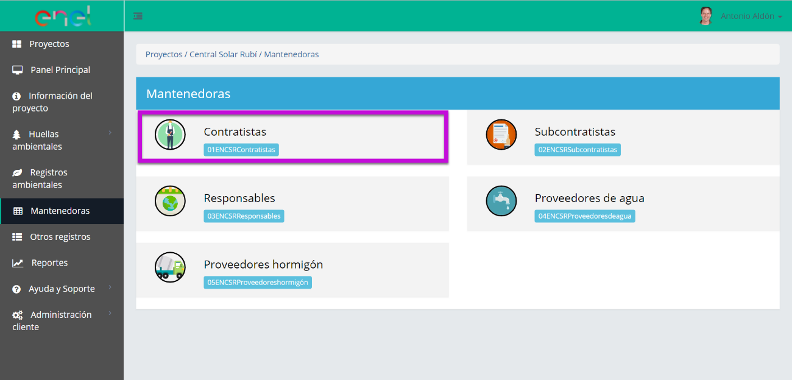
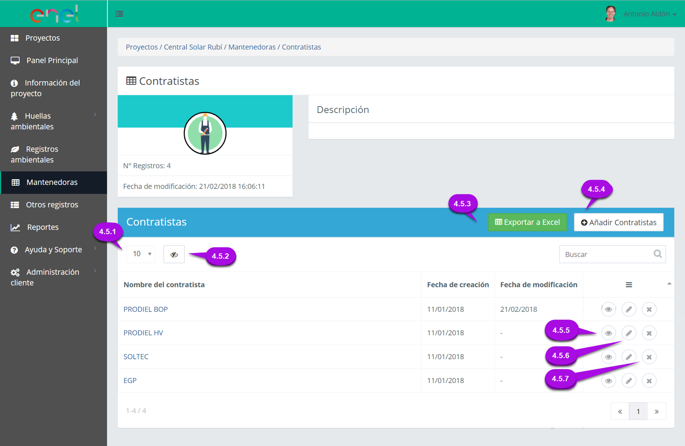
4.5.1 Lista de Visualización de Datos.
Permite elegir la opción de cuantos datos visualizar en la tabla.
4.5.2 Selector de Campos
Permite elegir los campos que se van a mostrar en la tabla.
4.5.3 Exportar a Excel
Permite descargar toda la información presente en la tabla en un archivo Excel.
4.5.4 Añadir
Botón con el cual se puede ingresar información a la tabla. La carga de información se aceptará siempre y cuando sean ingresados todos los campos obligatorios.
4.5.5 Botón Ver
Visualiza todos los campos del registro seleccionado.
4.5.6 Botón Editar
Edita el campo seleccionado.
4.5.7 Botón Eliminar
Elimina la información seleccionada.
4.6 Otros Registros
Formularios que permiten ingresar otro tipo de información en la plataforma pero que no se utiliza para el cálculo de los impactos ambientales.
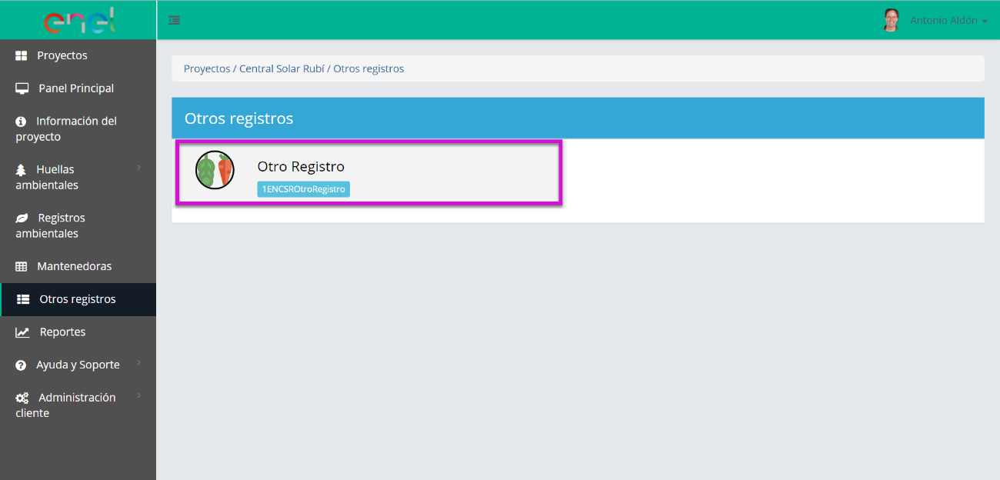
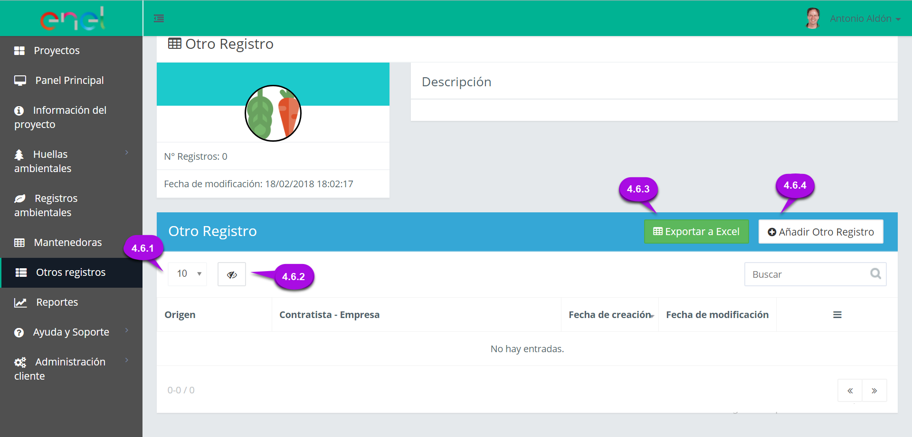
4.6.1 Lista de Visualización de Datos.
Permite elegir la opción de cuantos datos visualizar en la tabla.
4.6.2 Selector de Campos
Permite elegir los campos que se van a mostrar en la tabla.
4.6.3 Exportar a Excel
Permite descargar toda la información presente en la tabla en un archivo Excel.
4.6.4 Añadir
Botón con el cual se puede ingresar información a la tabla. La carga de información se aceptará siempre y cuando sean ingresados todos los campos obligatorios.
4.7 Reportes
Documento que presenta la principal información del proyecto y los totales de consumos y residuos acumulados en un rango de fecha determinado.
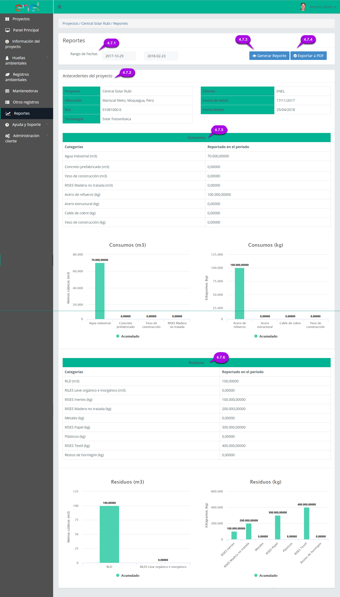
4.7.1 Rango de Fechas
Corresponde al rango de tiempo que se desea abarcar para la emisión de un reporte.
4.7.2 Antecedentes del proyecto
Información general acerca del proyecto.
4.7.3 Generar Reporte
Posterior a la elección del rango de fecha se genera el informe, cuya información aparecerá en pantalla.
4.7.4 Exportar a PDF
El informe emitido se puede exportar en PDF.
4.7.5 Consumos
Reporte de los consumos totales durante el periodo de tiempo elegido.
4.7.6 Residuos
Reporte de los residuos totales generados durante el periodo de tiempo elegido.
4.8 Administración cliente
4.8.1 Configuración Panel Principal
Permite elegir qué información mostrar o no en el panel principal y en qué formato.
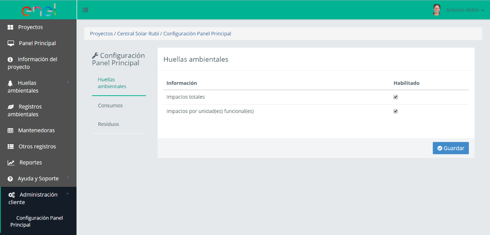
4.8.2 Carga Masiva
La plataforma permite realizar cargas masivas al proyecto, para lo cual es necesario ingresar el tipo de formulario (si es un registro ambiental, una lista mantenedora u otro registro) y el formulario específico al que irán los datos a cargar. Una vez elegidas las opciones, se descarga una matriz de ejemplo la cual debe cargarse con los datos que se desean. Posteriormente ese archivo debe subirse para que finalmente los datos aparezcan en la plataforma.
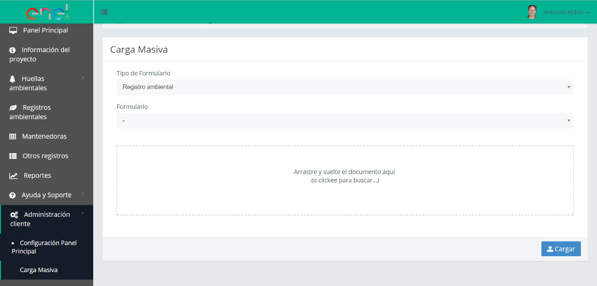